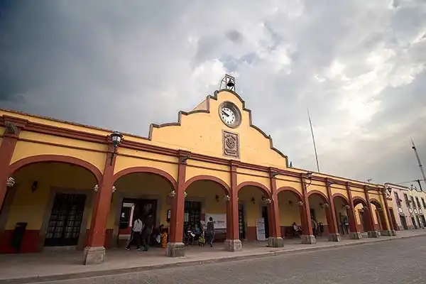
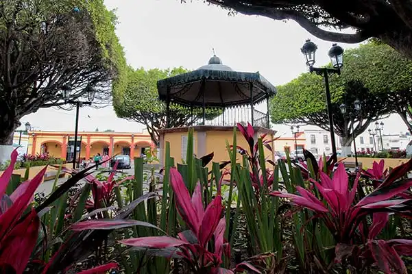
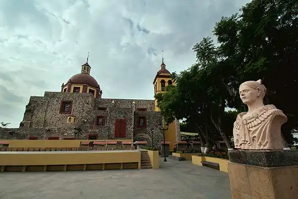
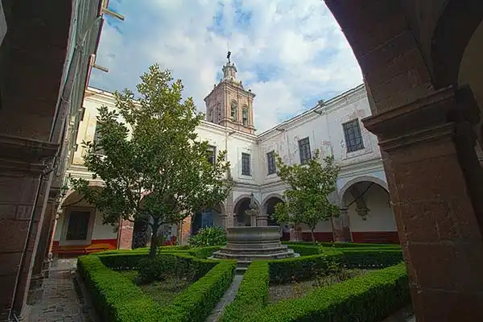

Geography
Corregidora is located in the middle of the country of Mexico. It’s located at a distance of seven kilometers from the capital of the state. Corregidora is situated in the southwest of the state. The geographical coordinates of Corregidora are: 20° 23’ y 20° 35’ north latitude and between the 100° 22’ and the 100° 31’ west longitude.
Population
In 2020, the population in Corregidora was 212,567 inhabitants (48.5% men and 51.5% women). Compared to 2010, the population in Corregidora increased by 48.6%. The explosive expansion that our city had experimented in the last decade, has provoked a fall in the sustainable development on the countrified population and a big elevation of the urban zone.
Economy
Corregidora is one of the richest municipalities in Mexico and Latin America. According to the United Nations, in 2004 the municipality had the fifth highest income level in the country, after three boroughs of Mexico City and the municipality of San Pedro Garza García, Monterrey. The same report placed it at the 12th highest level of human development among Mexican municipalities.
Exports
International sales of Corregidora in 2022 were US$145M, 16.1% more than the previous year. The products with the highest level of international sales in 2022 were Parts and Accessories of Motor Vehicles (US$41.7M), Parts of Apparatus for Protecting Electrical Circuits, with a Voltage Exceeding 1000 V and Boards, Panels, for Electricity Control and Distribution (US$24.3M), and Electrical Wires and Cables (US$14.4M).
Special Event
Gran Cué Pyramid

Municipal Palace

The main garden of "El Pueblito"

San Francisco Galileo Temple

"El Pueblito" Convent

Schöenstatt Sanctuary